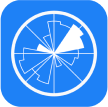

Vela
A weather app for wind and water sport enthusiasts
My Role:
- Researcher
- UX Designer
- UI Designer
Project:
CareerFoundry UX Immersion Course Project
Tools:
What is Vela?
Vela is a specialized weather app that supplies weather forecast data with the intent of assisting wind and water sport participants in making informed decisions.
The Problem
The difference between a good or a bad time often rides on
the weather.
Being aware of meteorological factors, such as temperature and
wind, is essential for those who go out on the water. But many
sources do not provide the necessary weather information for
wind and water enthusiasts; while those that do, present it in a
way that is confusing for the casual person.
Problem Statement
Casual water sport participants need a way to easily understand weather conditions because water activities/safety are dependent on shifting weather conditions.
Hypothesis
By offering specialized weather information in an accessible way, Vela can differentiate itself from other weather apps and target a wider audience.
Design Thinking Process
Understand Phase
Competitive Research
To get an understanding of the current market of weather apps and the design choices made within them, I did in-depth analysis of several competitors.
Windy.app
Windy.app fosters a community of serious weather enjoyers through its detailed dissemination of weather and weather related phenomenon.
Strengths
- Has easy to understand guides to understand weather phenomenon
- Offers a wealth of information with the ability to customize visuals
Weaknesses
- Specialized data is overwhelming unless the user is educated about the weather
- Intrusive subscription screen
Accuweather
With their Superior Accuracytm in weather data, AccuWeather provides important weather information to the wider public with a clear and easy to understand interface.
Strengths
- Superior Accuracytm
- Well designed UI
- International reach
- Trustworthy and reliable image
Weaknesses
- Lacks explanation of weather data
- No offline mode
Key Insight Derived
- Presenting a simplified summary of weather conditions would be beneficial for those who do not understand forecast data
- Alternative visuals can create opportunities for a wider audience to understand forecast data
User Interviews
To get an in depth look into what users are looking for in a weather app with a focus on wind/water sports, I conducted interviews with potential users.
Research Goals
Key Insight Derived
- People want reassurance about the weather to remain safe.
- People use what is at hand and most convenient/familiar to them.
- Community will always be a factor is wind/water sports.
- There is inherent danger when participating in a wind/water sport.
Define Phase
User Persona
With the insights derived from the user interviews, I created user personas to create a more personable image of the research and create a focal point for team members to reference.
Kip
Age
Occupation
Location
74
Retired
Massachusetts
About
Kip is enjoying his retirement by the coast where he
enjoys the peace of the ocean and boating during the
summer.
He wants to spend more time with his
grandkids and is thinking of taking them out on a
boating trip. Kip is unsure, as he is worried about
the unpredictable nature of weather and the danger
that comes with it.
Quotes
“People die everyday out on the water due to something in the weather.”
"I'd love to see something that rates the day - good for going out or not.”
Goals/Needs
- A way to know about safety on the water
- An accurate method for knowing the weather
- Warnings for storms/potential dangers
- Feel confident going out onto the water
Frustrations
- Not technologically proficient
- Gets confused with too much information presented
- Looking for an app that has a focus on safety
Motivations
- Spend more time with grandkids
- Know about the weather so he doesn't have to worry about dangers
Lock
Age
Occupation
Location
38
Electrical Engineer
South Carolina
About
Lock has enjoyed fishing since he was a child after
being introduced to it by his father.
As an
electrical engineer, Lock's job takes up most of his
week, however he makes sure to spend a day on the
weekend fishing alone or with friends.
He enjoys the
peace and challenge of fishing and seeks out
knowledge to improve his fishing techniques.
Quotes
“I do a thorough analysis of all the weather apps I have.”
“I don't go out on the water unless I check the forecast.”
Goals/Needs
- An app that provides data on meteorological activities
- An app that allows him to find new fishing spots - new ideas for fishing
- An app that does not have superfluous information
Frustrations
- Apps don't provide all the information he needs
- Paywalls that restrict information
Motivations
- Wants to spend a peaceful time out on the water
- Wants to steer clear of unfavorable weather conditions
Ideate Phase
Information Architecture
To understand the way in which information would flow and be presented, I created a sitemap where I outlined what screens Vela would have and how they would relate to one another.
![a flow chart, a long description follows: starting at the top and orange box with the words hompage/dashboard. From the box are four lines that point to blue boxes, from left to right the first is location weather forecast, the second is satellite map, the third is storm alerts, the last is options. From the blue box, location weather forecast there are four arrows pointing to pink boxes starting at the top the first is: hourly weather - the second is: detailed weather forecast, the third is: weekly weather and the last is: community board. The second blue box satellite map has one arrow pointing to a pink box that has: activity spot search. The last blue box, options has three arrows pointing to pink boxes. From top to bottom, the first box is account, the second box is offline viewing and the third box is help/FAQ. From the first pink box account is an arrow pointing to a yellow box with settings/preferences. The third pink box, help/FAQ as three arrows pointing to yellow boxes. From top to bottom, the first is ocean rules/guidelines, the second is safety tips and the last is contact us.](img/Vela/project-img-1x/sitemap-1x.png)
Design Phase
Wireframes
After figuring out what screens were needed for the app, I created visual mock-ups of the screens. Starting with low-fidelity sketches which allowed for quicker revisions and more ideation, to high-fidelity wireframes which, provided a more concrete visualization of the app screens.
Low-Fidelity
Mid-Fidelity
High-Fidelity
Usability Testing
After creating a functioning prototype that outlined the basic features of the app, I conducted usability tests to reveal if the prototype worked as intended and to uncover potential underlying issues.
Participants
P1
P2
P3
P4
P5
P6
Task: Create a New Account
- Confused by the lack of detail
- Tapped on the person icon to create an account instead of the settings icon
- Had difficulty locating the 'no account?' button
- Found the lines of the grids to be busy and wanted to see charts as a visual display
- Went to select the person icon for creating an account instead of the settings icon
- Had difficulty locating buttons during the first task
- Tried to click on the person icon at first rather than the settings icon
Scenario: Search for Surfing Spots
- Wanted activity search to be distinct from the extra filters
- Wasn't sure what the map key was due to lack of color and numbers
- Was unable to immediately find the activity search button on the map page
- Unable to identify the map key with it in greyscale
- Paid more attention to the feasibility of certain ideas - ie the resources required to create certain ideas
- Tried to change the location via the search bar rather than go to the map
- Got stuck on the second task trying to find where to search for activities
Scenario: Find Detailed Weather Forecast
- Would like to see assessment indicators on the forecast chart
- Found the third task impossible due to the lack of interactivity
- For the third task, focused on finding information on windsurfing rather than the wind forecast
- Thought the activity assessment indicator could work as a third tab where all activities are displayed
Notable Feedback
- Participants had no trouble with the main navigation
- Participants were unable to discern map key due to the lack of color
- Participants found the text difficult to read
Errors
- Participants did not know to go to the map to search for an activity.
- Participants expected the slider on the forecast page to be inter-actable when looking for forecast data.
- Participants had difficulty locating the 'no account' button while trying to make a new account.
- Participants tapped the 'Person icon' instead of the 'Settings icon' when trying to make a new account.
Wireframe Iterations
Through tester feedback and by consulting material design guidelines, Vela went through several iterations.
V1
Version 1 was the first attempt at high fidelity wireframes. I chose more subdued colors because I did not want to evoke any strong emotions that could distract the user.
V2
With Version 2, I increased the overall saturation to create a stronger emotional response. I removed all the outlines to create a more open design and rounded the edges of the boxes for a softer feel.
V3
In Version 3, I referenced the Material Design guidelines and found that the overall contrast of my app was poor, so I adjusted the color scheme, again. I also aligned the design using grids to create a more consistency. To increase readability of the text, I changed the body text font to Tahoma.
Next Steps
This project helped me develop a deeper understanding of the workflow for a UX designer. It was exciting to be able to enact the ideas I had developed from firsthand research. Gathering information from participants a challenge for me, but I was rewarded with valuable insights.
The process of developing a prototype often had me struggling as I strove to make my prototype fully functional. This fixation impeded my progress and I was unable to fully implement the features I had planned on adding. Even as I was stuck, I still greatly enjoyed the process of learning Figma and discovering ways to make the workflow more efficient.
I faced many challenges during this project that I was able to overcome through dedicated effort and I plan to continue with my efforts so that I can continue learning and improving.
New Hypothesis
I plan on implementing changes based on the new hypothesis:
To address this hypothesis, I plan on adding a chart viewing option to the forecast page to give users an alternative method of viewing variables. In addition, I plan on redesigning the table to include more visual representation of variables, so that the display is not exclusively numbers.
I also would like to include (optional) animations on the homepage to give users a more immediate understanding of current weather conditions.
In addition to adding more visual options, I plan on adding more functionality of the forecast page to give users more control over how they view the forecast. This will involve creating an options page for the table, where users will be able to chose which variables to include and in what order they are displayed. Users will also be able to change the units of measurement to ones they are more familiar with.